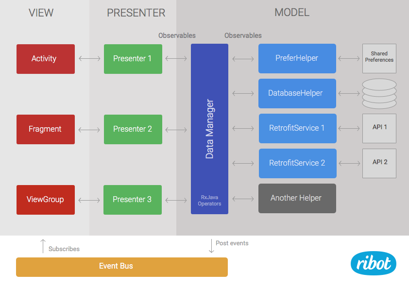

Architecture Guidelines
The architecture of our Android apps is based on the MVP (Model View Presenter) pattern.
-
View (UI layer): this is where Activities, Fragments and other standard Android components live. It's responsible for displaying the data received from the presenters to the user. It also handles user interactions and inputs (click listeners, etc) and triggers the right action in the Presenter if needed.
-
Presenter: presenters subscribe to RxJava Observables provided by the
DataManager. They are in charge of handling the subscription lifecycle, analysing/modifying the data returned by theDataManagerand calling the appropriate methods in the View in order to display the data. -
Model (Data Layer): this is responsible for retrieving, saving, caching and massaging data. It can communicate with local databases and other data stores as well as with restful APIs or third party SDKs. It is divided in two parts: a group of helpers and a
DataManager. The number of helpers vary between project and each of them has a very specific function, e.g. talking to an API or saving data inSharedPreferences. TheDataManagercombines and transforms the outputs from different helpers using Rx operators so it can: 1) provide meaningful data to the Presenter, 2) group actions that will always happen together. This layer also contains the actual model classes that define how the data structure is.

Looking at the diagram from right to left:
-
Helpers (Model): A set of classes, each of them with a very specific responsibility. Their function can range from talking to APIs or a database to implementing some specific business logic. Every project will have different helpers but the most common ones are:
- DatabaseHelper: It handles inserting, updating and retrieving data from a local SQLite database. Its methods return Rx Observables that emit plain java objects (models)
- PreferencesHelper: It saves and gets data from
SharedPreferences, it can return Observables or plain java objects directly. - Retrofit services : Retrofit interfaces that talk to Restful APIs, each different API will have its own Retrofit service. They return Rx Observables.
-
Data Manager (Model): It's a key part of the architecture. It keeps a reference to every helper class and uses them to satisfy the requests coming from the presenters. Its methods make extensive use of Rx operators to combine, transform or filter the output coming from the helpers in order to generate the desired output ready for the Presenters. It returns observables that emit data models.
-
Presenters: Subscribe to observables provided by the
DataManagerand process the data in order to call the right method in the View. -
Activities, Fragments, ViewGroups (View): Standard Android components that implement a set of methods that the Presenters can call. They also handle user interactions such as clicks and act accordingly by calling the appropriate method in the Presenter. These components also implement framework-related tasks such us managing the Android lifecycle, inflating views, etc.
-
Event Bus: It allows the View components to be notified of certain types of events that happen in the Model. Generally the
DataManagerposts events which can then be subscribed to by Activities and Fragments. The event bus is only used for very specific actions that are not related to only one screen and have a broadcasting nature, e.g. the user has signed out.
License
Copyright 2015 Ribot Ltd.
Licensed under the Apache License, Version 2.0 (the "License");
you may not use this file except in compliance with the License.
You may obtain a copy of the License at
http://www.apache.org/licenses/LICENSE-2.0
Unless required by applicable law or agreed to in writing, software
distributed under the License is distributed on an "AS IS" BASIS,
WITHOUT WARRANTIES OR CONDITIONS OF ANY KIND, either express or implied.
See the License for the specific language governing permissions and
limitations under the License.
Comments !